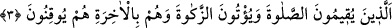
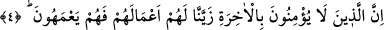
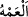

3. Onlar ki, namazı kılarlar, zekâtı verirler ve ahirete de kesin olarak inanırlar.
“Onlar ki, namaz kılarlar, zekâtı verirler” Bu, mü’minleri öven bir sıfat cümlesidir.
Namaz ve zekat özel olarak zikredilmiştir. Çünkü onlar îmanın belirtisi, mâlî ve bedenî
ibâdetlerin özüdür. Diğer sâlih amelleri de peşinden getirirler. Yâni onlar namazı, rukün
ve şartlarına riâyet ederek vakitlerinde edâ ederler; farz olan zekâtı hak sâhiplerine
verirler.
“Âhirete de kesin olarak inanırlar.” Yâni durum şu ki onlar âhiretin olacağını tasdik
ederler ve onu kesin bir bilgi ile bilirler. Âyette zamirin tekrar edilmesi, âhireti tasdikin
onlara mahsus olduğuna işârettir. Ya da bu ifâde bir ara cümlesidir. Sanki şöyle
denilmiştir: İşte bu îmân edenler ve sâlih amel işleyenler, âhirete hakka’l-yakîn bir
îmanla inanan kimselerdir, yoksa onlardan başkaları değildir. Çünkü ibâdetlerin
meşakkatlerine tahammül etmek, ancak âkıbet korkusu ve hesaba çekileceğine îtimad
edip kesin inanmakla olur.
4. Şüphesiz biz, âhirete inanmayanların işlerini kendilerine süslü gösterdik; o
yüzden bocalar dururlar.
“Şüphesiz biz, âhirete inanmayanların” öldükten sonra diriltilmeyi tasdik
etmeyenlerin “işlerini” çirkin amellerini “kendilerine süslü gösterdik” onlar için
süsledik.
Âhirete inanmayanların çirkin amellerini süslü göstermeyi, arzu edilen ve nefis için
sevilen bir şey kılarak yaptık. Nitekim Rasûlullah (s.a.)’in şu hadîsi bunu haber
vermektedir: “Cehennemin etrafı, nefsin hoşlandığı şeylerle çevrilmiştir.”[42] Yâni
cehennem sevilen ve arzu duyulan hususlarla kuşatılmış kılınmıştır. Bilesin ki her
dileme/meşîet, süsleme, saptırma/ıdlâl ve benzerleri asâleten Allah Teâlâ’ya, tâbi
olma/tebeiyyet yoluyla da başkasına nisbet edilir. Âyette Mu’tezile ve Kaderiyye
aleyhine kesin bir delil vardır.
“O yüzden bocalar dururlar.” Peşinden gelen zarar ve cezâyı dikkate almaksızın kötü
amelleriyle meşguliyet içinde ve onlara kendilerini kaptırmış halde sürekli ve devamlı
olarak şaşkın bir halde ve tereddüd içindedirler. Onlar kendi dalâletleri içinde şaşırıp
kalırlar.
“ şaşkınlıktan dolayı bir hususta tereddüd etmektir.